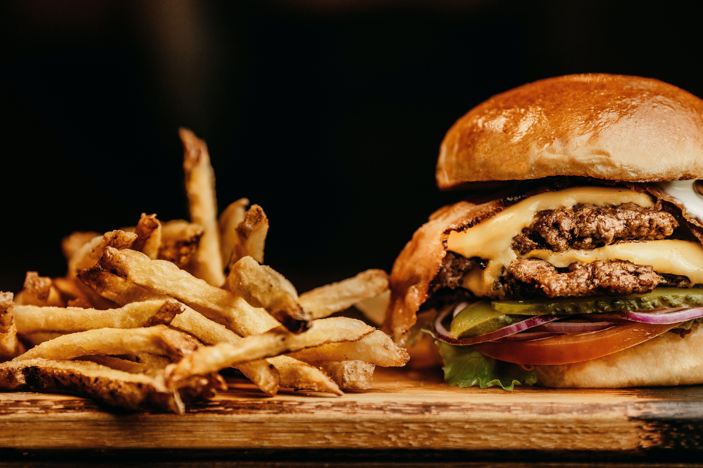

It’s easy to think that when it comes to words related to food, English probably takes second place behind French, which has given us a whole glossary of culinary terms from ingredients and elements (béchamel, mirepoix, bouquet garni) to cooking methods and processes (fricassée, au gratin, chiffonade), to complete dishes and delicacies (cassoulet, apéritif, amuse-bouche, crudités). But what English lacks in words for dishes and delicacies, it more than makes up for in words to do with the end result—eating and enjoying food. Expand your vocabulary, as well as your Yule-hole, with these 14 words for food-lovers.
JUNKET
Nowadays, the word junket tends only to be used to refer to political or press junkets—trips for politicians or journalists, at another’s expense, for promotional purposes. At one time, however, a junket was a vast merrymaking feast or banquet, where food and drink were consumed in large amounts, which in turn derives from the earlier 16th-century use of junket to refer to a dainty sweet treat or delicacy.
BOUFFAGE
Another word for a grand feast is bouffage, a term from the 17th century derived from an older French word for “any meat that (eaten greedily) fills the mouth and makes the cheeks to swell,” according to 17th century lexicographer Randle Cotgrave. Feel free also to call a large meal or fine food a spreadation (19th century), a waffle-frolic (18th century American English), and belly-cheer (16th century English).
GUT-GULLIE
Gut has been used to mean the stomach (or, originally, the abdomen and its contents) since the Old English period, and is the root of a host of gluttonous words like gut-foundered, which means hungry to the point of near starvation; gut-head, a 17th century word for someone who appears dull and slow witted from overeating; and gut-gullie, an old Scots dialect verb meaning to overeat or eat greedily.

HOW IT WORKS AS SIMPLE IS 1,2,3
1
If something tastes better than you expected, you could use the word wow to express your surprise. If you say something tastes amazing, you’re saying it tastes even better than great or really good.
2
This is an informal way of saying something tastes good. If you find something to be delicious, you could simply say “Yummy!” or you could expand it into a sentence.
3
There may be times when you don’t really like the taste of a certain food. But you probably can’t just shout “Yuck!” (an informal English word meaning something tastes or smells bad) without offending the cook or your hosts.